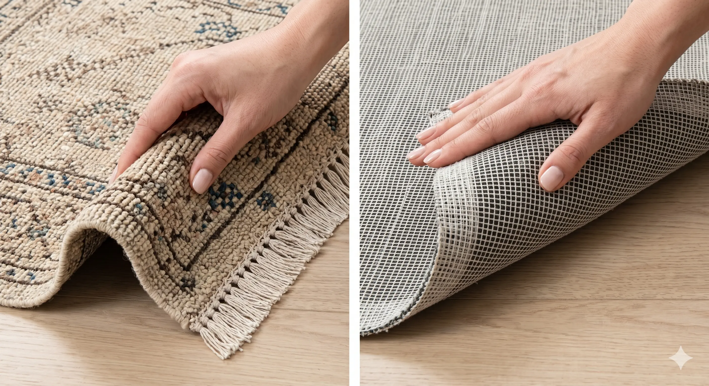
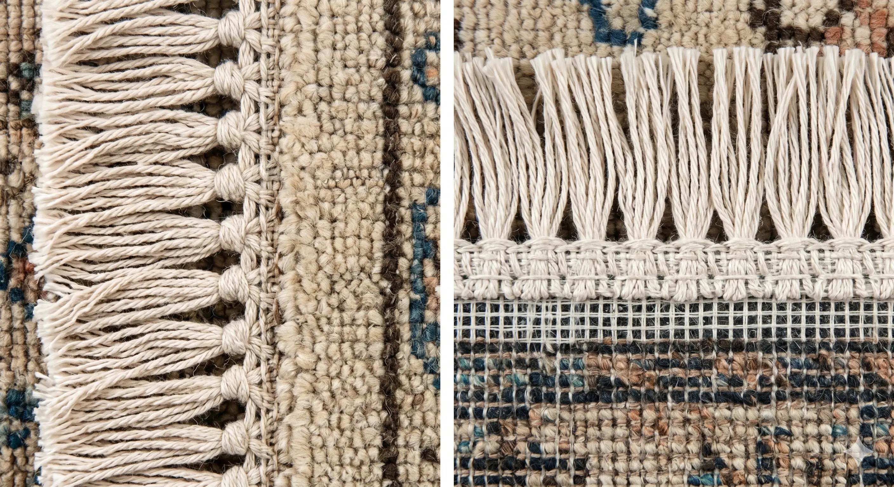
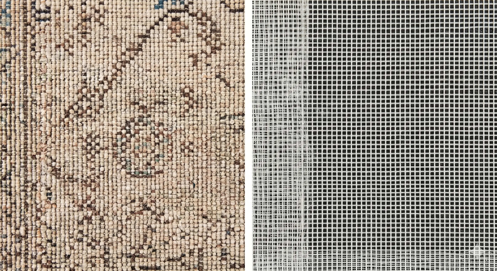

A Professional Curator's Guide to Rug Identification

Hand-Knotted: Because they are made without glue or plastic backings, handmade rugs are incredibly supple. You can fold them like a piece of heavy fabric.
Machine-Made: These rugs use a stiff "foundation" and often latex glue to hold fibers. They are rigid and can only be rolled, not easily folded.
Hand-Knotted: The fringe is the actual extension of the warp threads (the rug's skeleton). It is vital to the rug's life.
Machine-Made: The fringe is purely decorative. It is sewn or glued onto the finished rug. If you look closely at the base, you will see the stitching line.

If you are unsure about the material, take a tiny fiber from the back and burn it with a lighter:
Smells like burning hair. The flame goes out quickly. The residue is a black, crumbly ash that turns to powder when touched.
Smells like burning plastic or chemicals. The fiber melts and forms a hard, black bead that cannot be crushed.

Hand-Knotted: Look for "happy accidents." Slight variations in knot size or color (abrash) are signs of human hands. The pattern on the back will be almost as clear as the front.
Machine-Made: The back looks like a perfect, repetitive ızgara (grid). Every "knot" is identical, which actually devalues the rug in the eyes of collectors.
| Feature | Hand-Knotted | Machine-Made |
|---|---|---|
| Lifespan | 60 to 100+ Years | 5 to 10 Years |
| Value | Appreciates (Investment) | Depreciates (Disposable) |
| Dyes | Natural/Vegetable (Usually) | Synthetic/Chemical |